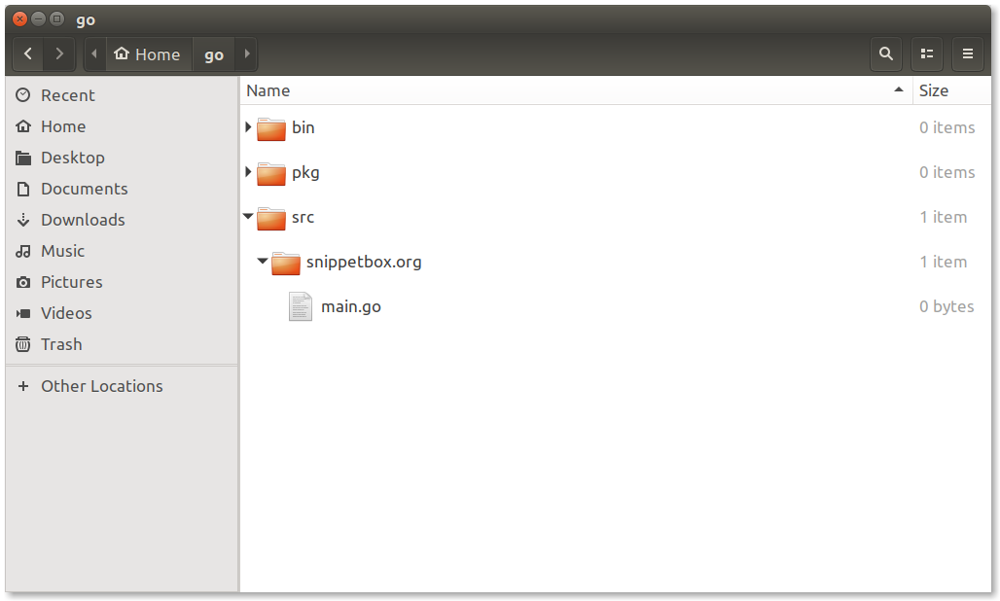

2.1. Workspaces and Repositories
Before writing any code we should setup a workspace that follows the Go conventions and a repository for our Snippetbox project.
If you're not familiar with the term, a workspace is essentially a single directory on your computer where you want all your Go-related items to live. If you haven't already got a workspace set up, go ahead and create one now. It's normal to use
$HOME/gofor your workspace but you can choose a different location if you wish.$ mkdir $HOME/goBy convention your workspace should contain three sub-directories:
bin,pkgandsrc. For now, the most important of these is thesrcdirectory which will contain the source-code repositories for your Go projects (and any third-party packages that you install).$ mkdir $HOME/go/bin $HOME/go/pkg $HOME/go/srcThe next step is to create a project repository under
srcspecifically for our Snippetbox project. This will be the top-level home for our project – it will hold all the code we write as well as ancillary assets like static UI files and HTML templates.The name of a repository will determine its import path, so it's a good idea to choose a name that's globally unique to avoid import conflicts. A common convention is to base it on a URL that you own. Throughout this book we'll use the name
snippetbox.orgfor our project repository.If you're following along, create that now and also add a
main.gofile to contain our code:$ mkdir $HOME/go/src/snippetbox.org $ touch $HOME/go/src/snippetbox.org/main.go
At this point the layout of your workspace should look a bit like this:

Notes
Using a Custom Workspace Location
If you don't want to use $HOME/go as your workspace that's OK. But you need to take the extra step of setting a GOPATH environment variable to let the Go tools know where your workspace is. For instance, if your workspace is at $HOME/code/go you should append the following line to your $HOME/.profile shell startup script:
··· export GOPATH=$HOME/code/go
Then restart your computer or log back in for the environment variable to take effect.